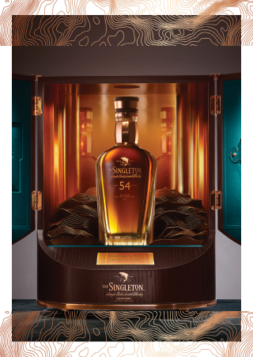

MORTLACH 30 Y.O
MORTLACH 26 Y.O
MORTLACH 21 Y.O
Khi ngày chuyển sang đêm, khi ánh sáng chuyển dời và màn đêm bao phủ, các giác quan trở nên tinh nhạy hơn bao giờ hết. Mortlach Midnight Malt 30 Y.O chậm rãi ghi dấu khoảnh khắc này, như một lời mời hiếm hoi đầy quyến rũ, chiết xuất từ những gì tinh túy, sâu sắc, hấp dẫn nhất trong thế giới mạch nha đơn chưng cất. Mortlach 30 Y.O sở hữu lớp hương phong phú và đa tầng nhờ kết tinh từ ba thùng gỗ chưng cất bao gồm thùng rượu vang Bordeaux, Calvados và rượu rum Guatemala mang tinh thần táo bạo và hấp dẫn nhất của Mortlach. Sản phẩm chỉ được phát hành giới hạn 350 chai trên toàn thế giới.
Chất rượu cô đọng màu hổ phách
hảo dược, cây xô thơm
Đậm đà với vị táo, cay nồng của tiêu đen
Kết thúc dài, ngọt ngào và gia vị cay
Thùng rượu vang Bordeaux, Calvados và rượu rum Guatemala 49,1% ABV | 700 mL
Khi ngày chuyển sang đêm, khi ánh sáng chuyển dời và màn đêm bao phủ, các giác quan trở nên tinh nhạy hơn bao giờ hết. Mortlach Midnight Malt 30 Y.O chậm rãi ghi dấu khoảnh khắc này, như một lời mời hiếm hoi đầy quyến rũ, chiết xuất từ những gì tinh túy, sâu sắc, hấp dẫn nhất trong thế giới mạch nha đơn chưng cất. Mortlach 30 Y.O sở hữu lớp hương phong phú và đa tầng nhờ kết tinh từ ba thùng gỗ chưng cất bao gồm thùng rượu vang Bordeaux, Calvados và rượu rum Guatemala mang tinh thần táo bạo và hấp dẫn nhất của Mortlach. Sản phẩm chỉ được phát hành giới hạn 350 chai trên toàn thế giới.
Chất rượu cô đọng màu hổ phách
hảo dược, cây xô thơm
Đậm đà với vị táo, cay nồng của tiêu đen
Kết thúc dài, ngọt ngào và gia vị cay
Thùng rượu vang Bordeaux, Calvados và rượu rum Guatemala 49,1% ABV | 700 mL
WHISKY LÀ SỰ KẾT TINH TỪ NGHỆ THUẬT VÀ KHOA HỌC, VỚI NHIỆM VỤ KHÔNG NGỪNG VẬN DỤNG HƯƠNG VỊ CHO MỘT CUỘC HÀNH TRÌNH PHỨC TẠP, TIẾN TRIỂN THEO NHỮNG CON ĐƯỜNG KHÔNG CỐ ĐỊNH, CUỐI CÙNG CHỈ ĐỂ CHO THẤY RẰNG ĐÓ LÀ MỘT HÀNH ĐỘNG NHẪN NẠI VỚI TẦM NHÌN XA.
Dr craig wilson
bậc thầy phối trộn

Mortlach 26 Y.O sở hữu quy trình chưng cất độc đáo 2.81 lần, kết hợp cùng 26 năm ủ trong hai loại thùng gỗ sồi Pedro Ximenez và Oloroso seasoned để sở hữu hương vị đậm đà và nổi trội. Mortlach vừa ngọt ngào lôi cuốn với vị trái cây khô, mật ong, vừa mạnh bạo với hương vị đinh hương, thịt nướng, vị chát tannin của thùng gỗ sồi. Mùi hăng cay sau cùng, cộng với vị đậm đà của hoa quả, tạo nên hậu vị thanh tao kéo dài. Phiên bản chỉ được đóng chai với số lượng 3.883 chai trên thế giới.
Hương vị trái cây phong phú
Trái cây, cam thảo với hương thơm của đinh hương.
Để lại dư âm khô nhưng vẫn rất đậm đà.
Trưởng thành dưới đặc tính táo bạo của nhà chưng cất, được hoàn thiện cẩn thận trong thùng sherry Pedro Ximenez và Oloroso, Mortlach 21 Y.O sở hữu hương vị đậm đà hơn hẳn. Chi với ngụm đầu tiên, whisky đã đưa người dùng vào mê cung tầng hương phản chiếu sự phức tạp đầy bí ẩn. Những tầng hương sâu thẳm, quyện với mùi thơm trái cây khô và vị thịt nướng khiến Mortlach 21 Y.O trở nên gần như không thể cưỡng. Sản phẩm được phát hành với 7.692 chai trên thế giới.
Nho khô, mận khô, quả sung; vị thịt cân bằng với chanh.
Sô cô la đen, hạt, cam tẩm gia vị, ớt cay và thịt tẩm bột.
Kéo dài và quyến rũ với hương thịt mặn và trái cây.
THE SINGLETON 54 Y.O

THE SINGLETON 39 Y.O
THE SINGLETON 38 Y.O
THE SINGLETON 25 Y.O
THE SINGLETON 21 Y.O
Paragon of Time 2
Là dòng whisky lâu đời và hiếm có bậc nhất của thương hiệu, The Singleton 54 Paragon of Time II là hiện thân cho những tinh hoa vượt xa khái niệm thời gian của nhà chưng cất trứ danh. Với quá trình chưng cất đặc biệt tại Dufftown vào những năm 1960, cùng hơn nửa thế kỷ ủ trong những thùng gỗ sồi quý giá và quá trình ủ quyết định trong loại thùng Pedro-Ximenez Sherry trứ danh bằng tay nghề điêu luyện, whisky sở hữu tất cả những phẩm chất đỉnh cao đích thực. Từ đó, thế giới được chứng kiến một trong những chất rượu phong phú nhất mà chỉ có tài nghệ và sự nhẫn nại bậc thầy của con người mới có thể làm nên.
Nho khô ngâm rượu, kẹo vỏ cam và hạnh nhân nướng
Ngọt ngào lẫn vị cay của trái đinh hương, sau đó khô dần
Vị ngọt nhẹ nhưng cay làm đọng lại độ ấm kéo dài dễ chịu
Thùng Pedro- Ximenez Sherry 44,1% ABV | 700 mL
Thị trấn Dufftown là nơi có mật độ nhà máy chưng cất cao nhất trên thế
giới,
cũng là quê hương của các nhà máy chưng cất Mortlach, Glenfiddich, Balvenie, Convalmore,
Glendullan và Kininvie đã không còn tồn tại.
Tục ngữ địa phương nói rằng “Rome được xây dựng trên bảy ngọn đồi, Dufftown đứng trên bảy
bức
tĩnh đồng”. Do khả năng sản xuất cao, Dufftown là một trong những thị trấn hùng mạnh nhất
trong
ngành công nghiệp rượu whisky.
The Singleton of Glen Ord 42 Y.O là dòng whisky siêu sang nằm trong bộ sưu tập “The Singleton’s Forgotten Drop” danh giá,với duy nhất 600 chai được đánh số trên toàn thế giới. Đây là một trong những phiên bản whisky lâu năm nhất trong lịch sử gần 200 năm của nhà chưng cất Glen Ord.Tuyệt tác whisky này được chế tác từ tâm huyết của bậc thầy pha chế Maureen Robinson. Bà đã mang đến hơi thở mới cho nhà Glen Ord khi tuyển chọn loại whisky quý hiếm 42 năm tuổi và cho trưởng thành thêm 4 tháng cuối trong hai thùng gỗ sồi Mỹ. Chỉ cần một ngụm rượu, người thưởng thức như lạc vào chốn bồng lai của hương vị được ủ ròng rã hơn 4 thập kỷ qua.
Gỗ sồi ngọt và thơm đạt đến âm hưởng Amontillado
Vị ngọt đậm và chút muối cân bằng hòa cùng chất chua
Kéo dài với tinh dầu bạc hà the mát và đắng nhẹ
Thùng gỗ sồi Mỹ và sherry Amontillado 49,3% ABV | 700 mL
Gần 4 thập kỷ được ủ trong thùng rượu với chỉ 1.695 chai được phát hành trên thế giới,The Singleton 39 Y.O chính là đại diện tiêu biểu cho chất rượu châu Âu xa hoa và mãnh liệt, là một loại rượu mạch nha đơn không giống với bất cứ cái tên nào khác. Whisky được chế tác từ nguồn nguyên liệu đầu vào được chọn lọc kỹ lưỡng của bậc thầy phối trộn Maureen Robinson cho lần ủ đầu tiên kéo dài 12 năm, và tiếp tục trải qua quá trình trưởng thành thứ cấp dài nhất trong lịch sử của nhà The Singleton of Glen Ord kéo dài đến 27 năm trong những thùng gỗ sồi Châu Âu trước đây đã từng ủ Vang Port, Vang đỏ và Blend of PX & Oloroso, để tạo nên chất vị bùng nổ trong vòm miệng.
Bánh trái cây, nho khô ngâm rượu, kẹo vỏ cam và hạnh nhân
Ngọt ngào và dễ chịu điểm chút vị cay của trái đinh hương.
Kéo dài với hương trái cây và gia vị ấm áp cùng mận mặn
Thùng gỗ sồi châu Âu, Bordeaux 46,2% ABV | 700 mL
Mang trong mình hương vị phong phú khó cưỡng, The Singleton of Glen Ord 38 Y.O là dòng whisky mạch nha đơn lâu đời bậc nhất tại nhà The Singleton.Từ chai rượu non trẻ ở độ tuổi 12,The Singleton trải qua quá trình ủ rượu kỳ công do chính Bậc thầy Maureen Robinson thực hiện. Bà đã cho dòng rượu trưởng thành lần hai trong những thùng gỗ sồi chất lượng như ex-Bourbon, Pedro Ximenez Oloroso và thùng gỗ sồi Mỹ. 26 năm kiên trì kết hợp đã mang đến hương vị đa tầng mà hài hòa của một thành phẩm 38 năm tuổi.The Singleton 38 là chuyến phiêu du mùi hương khó cưỡng, với sự đậm đà Scotland được chắt lọc và đào sâu, là sự vỡ òa cảm xúc của nhiều nốt hương ẩn chứa.
Cay nhẹ lúc khởi đầu
Kem vani và bánh caramel được cân bằng với muối
Ấm áp, ngọt ngào đọng lại trong thời gian dài
Thùng PX Oloroso, ex-Bourbon, sồi Mỹ 49,6% ABV | 700 mL
The Singleton of Dufftown 25 Y.O được sản xuất với số lượng hạn chế từ những thùng whisky lâu đời nhất ở nhà chưng cất vùng Dufftown. Được ủ trong thùng gỗ Châu Mỹ, whisky mang tới hương vị êm dịu trên vòm miệng và hậu vị trái cây ngọt ngào. Chỉ 1 trong 50.000 thùng gỗ sồi mới đủ phẩm chất để tạo ra chai whisky mạch nha đơn quý hiếm này. Chính niềm đam mê và nỗ lực không ngừng đến gần hơn tới sự hoàn hảo đã mang lại cho Dufftown 25 năm tuổi hương vị tuyệt hảo, xứng đáng là niềm tự hào của dòng whisky danh giá.
Dịu dàng và êm dịu với chút gia vị
Trái cây nhiệt đới từ đào, chanh dây, táo
Kéo dài với dư âm ngọt ngào
The Singleton of Dufftown 21 Y.O lại là một kiệt tác khác, được ủ trong thùng gỗ sherry Châu Âu mang tới hương vị trái cây mượt mà và ngọt ngào. Kết quả này được tạo ra bởi quy trình chưng cất được tính toán cẩn trọng, và chỉ một trong 20,000 thùng gỗ sồi mới đủ phẩm chất để tạo ra chai whisky mạch nha đơn quý hiếm này. Whisky gây bất ngờ với phức hợp tuyệt diệu, phong phú và ngọt ngào từ vừng, kẹo cứng, botrytis semillon và vô số quả mọng, vốn là dấu ấn đặc trưng của bậc thầy pha chế đến từ Dufftown.
Bánh mì nướng, mật ong, mứt hoa quả
Vừng, kẹo cứng, và quả mọng
Kéo dài với khói, trái cây và quả mọng
Paragon of Time 2
Là dòng whisky lâu đời và hiếm có bậc nhất của thương hiệu, The Singleton 54 Paragon of Time II là hiện thân cho những tinh hoa vượt xa khái niệm thời gian của nhà chưng cất trứ danh. Với quá trình chưng cất đặc biệt tại Dufftown vào những năm 1960, cùng hơn nửa thế kỷ ủ trong những thùng gỗ sồi quý giá và quá trình ủ quyết định trong loại thùng Pedro-Ximenez Sherry trứ danh bằng tay nghề điêu luyện, whisky sở hữu tất cả những phẩm chất đỉnh cao đích thực. Từ đó, thế giới được chứng kiến một trong những chất rượu phong phú nhất mà chỉ có tài nghệ và sự nhẫn nại bậc thầy của con người mới có thể làm nên.
Nho khô ngâm rượu, kẹo vỏ cam và hạnh nhân nướng
Ngọt ngào lẫn vị cay của trái đinh hương, sau đó khô dần
Vị ngọt nhẹ nhưng cay làm đọng lại độ ấm kéo dài dễ chịu
Thùng Pedro- Ximenez Sherry 44,1% ABV | 700 mL
Thị trấn Dufftown là nơi có mật độ nhà máy chưng cất cao nhất trên
thế giới,
cũng là quê hương của các nhà máy chưng cất Mortlach, Glenfiddich, Balvenie, Convalmore,
Glendullan và Kininvie đã không còn tồn tại.
Tục ngữ địa phương nói rằng “Rome được xây dựng trên bảy ngọn đồi, Dufftown đứng trên
bảy bức
tĩnh đồng”. Do khả năng sản xuất cao, Dufftown là một trong những thị trấn hùng mạnh
nhất trong
ngành công nghiệp rượu whisky.
The Singleton of Glen Ord 42 Y.O là dòng whisky siêu sang nằm trong bộ sưu tập “The Singleton’s Forgotten Drop” danh giá,với duy nhất 600 chai được đánh số trên toàn thế giới. Đây là một trong những phiên bản whisky lâu năm nhất trong lịch sử gần 200 năm của nhà chưng cất Glen Ord.Tuyệt tác whisky này được chế tác từ tâm huyết của bậc thầy pha chế Maureen Robinson. Bà đã mang đến hơi thở mới cho nhà Glen Ord khi tuyển chọn loại whisky quý hiếm 42 năm tuổi và cho trưởng thành thêm 4 tháng cuối trong hai thùng gỗ sồi Mỹ. Chỉ cần một ngụm rượu, người thưởng thức như lạc vào chốn bồng lai của hương vị được ủ ròng rã hơn 4 thập kỷ qua.
Gỗ sồi ngọt và thơm đạt đến âm hưởng Amontillado
Vị ngọt đậm và chút muối cân bằng hòa cùng chất chua
Kéo dài với tinh dầu bạc hà the mát và đắng nhẹ
Thùng gỗ sồi Mỹ và sherry Amontillado 49,3% ABV | 700 mL
Gần 4 thập kỷ được ủ trong thùng rượu với chỉ 1.695 chai được phát hành trên thế giới,The Singleton 39 Y.O chính là đại diện tiêu biểu cho chất rượu châu Âu xa hoa và mãnh liệt, là một loại rượu mạch nha đơn không giống với bất cứ cái tên nào khác. Whisky được chế tác từ nguồn nguyên liệu đầu vào được chọn lọc kỹ lưỡng của bậc thầy phối trộn Maureen Robinson cho lần ủ đầu tiên kéo dài 12 năm, và tiếp tục trải qua quá trình trưởng thành thứ cấp dài nhất trong lịch sử của nhà The Singleton of Glen Ord kéo dài đến 27 năm trong những thùng gỗ sồi Châu Âu trước đây đã từng ủ Vang Port, Vang đỏ và Blend of PX & Oloroso, để tạo nên chất vị bùng nổ trong vòm miệng.
Bánh trái cây, nho khô ngâm rượu, kẹo vỏ cam và hạnh nhân
Ngọt ngào và dễ chịu điểm chút vị cay của trái đinh hương.
Kéo dài với hương trái cây và gia vị ấm áp cùng mận mặn
Thùng gỗ sồi châu Âu, Bordeaux 46,2% ABV | 700 mL
Mang trong mình hương vị phong phú khó cưỡng, The Singleton of Glen Ord 38 Y.O là dòng whisky mạch nha đơn lâu đời bậc nhất tại nhà The Singleton.Từ chai rượu non trẻ ở độ tuổi 12,The Singleton trải qua quá trình ủ rượu kỳ công do chính Bậc thầy Maureen Robinson thực hiện. Bà đã cho dòng rượu trưởng thành lần hai trong những thùng gỗ sồi chất lượng như ex-Bourbon, Pedro Ximenez Oloroso và thùng gỗ sồi Mỹ. 26 năm kiên trì kết hợp đã mang đến hương vị đa tầng mà hài hòa của một thành phẩm 38 năm tuổi.The Singleton 38 là chuyến phiêu du mùi hương khó cưỡng, với sự đậm đà Scotland được chắt lọc và đào sâu, là sự vỡ òa cảm xúc của nhiều nốt hương ẩn chứa.
Cay nhẹ lúc khởi đầu
Kem vani và bánh caramel được cân bằng với muối
Ấm áp, ngọt ngào đọng lại trong thời gian dài
Thùng PX Oloroso, ex-Bourbon, sồi Mỹ 49,6% ABV | 700 mL
The Singleton of Dufftown 25 Y.O được sản xuất với số lượng hạn chế từ những thùng whisky lâu đời nhất ở nhà chưng cất vùng Dufftown. Được ủ trong thùng gỗ Châu Mỹ, whisky mang tới hương vị êm dịu trên vòm miệng và hậu vị trái cây ngọt ngào. Chỉ 1 trong 50.000 thùng gỗ sồi mới đủ phẩm chất để tạo ra chai whisky mạch nha đơn quý hiếm này. Chính niềm đam mê và nỗ lực không ngừng đến gần hơn tới sự hoàn hảo đã mang lại cho Dufftown 25 năm tuổi hương vị tuyệt hảo, xứng đáng là niềm tự hào của dòng whisky danh giá.
Dịu dàng và êm dịu với chút gia vị
Trái cây nhiệt đới từ đào, chanh dây, táo
Kéo dài với dư âm ngọt ngào
The Singleton of Dufftown 21 Y.O lại là một kiệt tác khác, được ủ trong thùng gỗ sherry Châu Âu mang tới hương vị trái cây mượt mà và ngọt ngào. Kết quả này được tạo ra bởi quy trình chưng cất được tính toán cẩn trọng, và chỉ một trong 20,000 thùng gỗ sồi mới đủ phẩm chất để tạo ra chai whisky mạch nha đơn quý hiếm này. Whisky gây bất ngờ với phức hợp tuyệt diệu, phong phú và ngọt ngào từ vừng, kẹo cứng, botrytis semillon và vô số quả mọng, vốn là dấu ấn đặc trưng của bậc thầy pha chế đến từ Dufftown.
Bánh mì nướng, mật ong, mứt hoa quả
Vừng, kẹo cứng, và quả mọng
Kéo dài với khói, trái cây và quả mọng
9 Rogue Casks
Port Ellen 40 Y.O – 9 Rogue Casks là một phiên bản thú vị được sản xuất bằng cách sử dụng chín chiếc thùng cũ từ năm 1979 được phát hiện trong một góc tối của nhà máy chưng cất tại Port Ellen. Chín câu chuyện trong một dòng chảy mạch nha độc đáo, Port Ellen 40 Y.O mang đến hương thảo mộc tinh tế hòa chút vị cháy vỏ quýt và kem caramel-cà phê nướng. Khi uống vào, whisky bật lên vị khói tràn đầy, được tô điểm bởi thuộc da và gia vị gỗ,để lại dư vị khói lâu dài trong tâm trí. Là dòng whisky thứ hai trong bộ sưu tập Untold Stories, Port Ellen 40 Y.O đại diện cho những hồi ức trân quý về nhà chưng cất lừng danh của xứ sở Scotland. Port Ellen 40 Y.O là dòng rượu lâu đời và quý hiếm nhất từng được ra mắt, trưng dụng những tinh hoa bật nhất từ chín thùng ủ độc nhất và hữu hạn. Sản phẩm được đóng chai với số lượng giới hạn chỉ 1.380 chai trên toàn thế giới.
Hương thảo mộc, khói nhẹ, trái cây đỏ, caramel và vỏ đào
Có vị khói hơn với thuốc lá, da thuộc và gia vị gỗ
Kéo dài đầy thú vị với khói nhẹ.
TALISKER 44 Y.O
TALISKER 43 Y.O
TALISKER 40 Y.O
TALISKER 25 Y.O
TALISKER 18 Y.O
Chúng tôi không hề đơn độc trong niềm đam mê biển cả. Được sinh ra từ khát vọng phiêu lưu, Talisker tạo dựng mối quan hệ đối tác với Parley for the Oceans, một mạng lưới toàn cầu gồm các nhà sáng tạo, nhà khoa học và nhà cách tân, luôn nỗ lực hết mình để bảo vệ và gìn giữ các đại dương trên thế giới. Cùng nhau, Talisker và Parley hợp sức để đưa biển khơi trở về trạng thái cũ. Trong vòng ba năm tới, chúng tôi đặt ra mục tiêu hỗ trợ bảo tồn 100 triệu mét vuông hệ sinh thái biển trên khắp thế giới. Những môi trường sống xanh này, trong đó có cả rừng tảo bẹ và cỏ biển, đầm lầy và rừng ngập mặn, là nơi duy trì sức khỏe của cả đất liền và biển. Loại rượu whisky hoang dã này mang đến sự bùng nổ của mối liên kết đầy cảm hứng ấy, phản ánh sức mạnh và vẻ đẹp biển khơi mà chúng ta may mắn được tận hưởng.

Forests of the Deep
Được sinh ra từ biển khơi và lấy cảm hứng từ chuyến thám hiểm đến một trong những khu rừng tảo bẹ biển lớn nhất thế giới, Talisker Single Malt Scotch Whisky 44 Y.O: Forests of the Deep hoàn thiện chất vị trong thùng gỗ sồi nằm trên tàu thám hiểm khi khám phá những khu rừng biển. Những thanh gỗ này sau đó được đốt cháy bằng cách sử dụng một lượng nhỏ mùn gỗ và tảo bẹ biển Scotland được nuôi trồng bền vững, trước khi kết thúc hành trình trưởng thành của whisky. Nhờ đó, bản phát hành chỉ 1.997 chai tại một số thị trường hạn chế của Talisker này đạt đến độ sâu mới của hương vị, kết hợp hương thơm lôi cuốn và điểm nhấn khói ngọt ngào của biển.
Hương thảo mộc, khói nhẹ, trái cây đỏ, caramel và vỏ đào
Có vị khói hơn với thuốc lá, da thuộc và gia vị gỗ
Kéo dài đầy thú vị với khói nhẹ.
Xpedition Oak
Năm 1830, hai anh em nhà MacAskills đã dong buồm ra khơi, bắt đầu chuyến hành trình giữa biển khơi Đại Tây Dương để đặt chân lên vùng đảo Skye. Và chính tại đây, cuộc hành trình tiếp diễn bởi một hành trình khác đầy chông gai mang tên “Talisker”. Bộ sưu tập là những dòng whisky mạch nha hoang dại, được hoàn thiện trong những thùng ván đơn sơ, đã đồng hành cùng nhà thám hiểm James Aiken khi một mình vượt qua chặng hành trình 3.000 dặm trên biển - từ La Gomera, quần đảo Canary đến Antigua, để tạo nên một cá tính độc đáo hiếm thấy. Sau 4 thập kỷ ấp ủ, Talisker Xpedition Oak 43 Y.O chính thức ra đời chỉ trong vỏn vẹn 10 thùng, quyện hòa sự hùng vĩ và khắc nghiệt của Đại Tây Dương cùng tinh thần hoang dã can trường, thắt chặt mối liên hệ của hương vị đỉnh cao cùng giá trị thiên nhiên bất tận nơi đây.
Ngọt ngào đầy sôi động, cân bằng với muối đại dương
Hơi chát nhẹ trước khi hơi ấm của tiêu bao phủ vòm miệng
Mạnh mẽ khó quên, tràn ngập vị cay nồng của ớt ngọt
Thùng gỗ sồi từ thám hiểm đại dương 49,7% ABV | 700 mL
The Bodega Series
Takisker 40 Y.O, vintage 1978 là một trong những chai rượu lâu năm nhất
của
nhà Talisker và là sự kết hợp hoàn hảo giữa hai bậc thầy của hai nhà sản xuất rượu danh
tiếng
Talisker (nhà sản xuất whisky lâu đời nhất vùng Skye, thành lập năm 1830) và nhà Delgado
Zuleta
(nhà sản xuất rượu sherry lâu đời nhất vùng Marco de Jerez).
Whisky mở đầu với mùi hương của trái cây chín, lê ngâm đường, tiếp theo là hương gỗ đàn
hương và
mùi muối biển trên nền khói nhẹ. Vị ngọt ngậy cân bằng nồng độ cồn cao, khởi đầu với vị ngọt
của
trái cây, nho khô, chuyển dần sang vị muối biển rồi kết thúc với vị cay của tiêu. Hậu vị kéo
dài, ngậy với các loại hạt, ấm áp với hương khói quen thuộc.
Khởi đầu ngọt ngào với trái cây
Mặn mà của biển cả, kết thúc nóng và cay
Kéo dài và nóng ấm với mùi khét
Được mệnh danh là “người con sinh ra từ biển cả”, Talisker 25 Y.O là món quà đích thực dành cho những tâm hồn ưa phiêu lưu. Những chiến tích hào hùng cần được tưởng thưởng theo cách hào sảng, Talisker chính là lựa chọn tuyệt hảo cho các nhà thám hiểm tài ba. Hương khói biển đậm đà đi kèm với trái cây tươi như mâm xôi, chuối, lê, vị cay nhẹ của tiêu đỏ nối liền với hương hoa thạch nam tăng dần với vị caramel mặn và sô cô la đen. Nhà thám hiểm sẽ thấy chuyến phiêu lưu kết thúc với một chút đắng sau cùng trong làn khói nhẹ dâng lên sống mũi. Bạn muốn bắt đầu một cuộc viễn chinh? Hãy bắt đầu với một ngụm Talisker.
Chậm rãi, ngọt ngào, sau đó cay nồng.
Cân bằng giữa vị đắng, muối và khói
Kéo dài, hơi đắng, rất khô và có khói
The Bodega Series
Một trong những loại mạch nha được yêu thích nhất mọi thời đại, Talisker 18 Y.O là kiệt tác đến từ một trong những nhà máy chưng cất vĩ đại nhất của Scotland, và được vinh danh là “Rượu whisky mạch nha đơn tốt nhất thế giới” tại Giải thưởng Whisky Thế giới năm 2007. Ngay từ ngụm đầu tiên, whisky đã đưa người thưởng ngoạn bước lên hành trình chinh phạt những bến bờ vị giác của vị ngọt trái cây xen lẫn vị cay.Than bùn và khói đi theo cùng hương nước hoa và gỗ sồi. Nơi vòm miệng, rượu phong phú với các nốt hương của gỗ sồi cay, hạt cà phê espresso và khói gỗ. Rượu kết thúc với vị cay nồng từ hạt tiêu.
Vị ngọt trái cây kết hợp với vị cay nhẹ
Vị cay, gỗ sồi, cà phê espresso và khói gỗ
Kết thúc kéo dài với gỗ sồi cay
The Bodega Series
Nối dài chuỗi hương vị whisky cổ điển đến từ Isle of Skye, Talisker 10 Y.O được ủ tối thiểu 10 năm trong thùng gỗ sồi Mỹ, ngày càng được yêu thích nhờ vị cay nồng của vùng duyên hải, vị khói đặc trưng xứng danh single malt thực thụ. Whisky được lấy cảm hứng từ biển cả, với làn khói than bùn ấm áp hòa quyện cùng vị muối mặn mòi của biển, hương cam quýt và hàu tươi, hậu vị ấm áp kéo dài của hạt tiêu. Hương vị trái cây trong vườn và lúa mạch ngon ngọt mang đến sự cân bằng tinh tế và đẹp mắt. Talisker 10 Y.O đã giành giải vàng tại San Francisco World Spirits, và “Best Islands Single Malt” tại World Whiskies Awards 2017.
Khói dày, vỏ táo và lê ngọt ngào
Than bùn, tiêu, nước muối và lúa mạch khô
Dư âm của bánh mì mạch nha nướng than
Xpedition Oak
Năm 1830, hai anh em nhà MacAskills đã dong buồm ra khơi, bắt đầu chuyến hành trình giữa biển khơi Đại Tây Dương để đặt chân lên vùng đảo Skye. Và chính tại đây, cuộc hành trình tiếp diễn bởi một hành trình khác đầy chông gai mang tên “Talisker”. Bộ sưu tập là những dòng whisky mạch nha hoang dại, được hoàn thiện trong những thùng ván đơn sơ, đã đồng hành cùng nhà thám hiểm James Aiken khi một mình vượt qua chặng hành trình 3.000 dặm trên biển - từ La Gomera, quần đảo Canary đến Antigua, để tạo nên một cá tính độc đáo hiếm thấy. Sau 4 thập kỷ ấp ủ, Talisker Xpedition Oak 43 Y.O chính thức ra đời chỉ trong vỏn vẹn 10 thùng, quyện hòa sự hùng vĩ và khắc nghiệt của Đại Tây Dương cùng tinh thần hoang dã can trường, thắt chặt mối liên hệ của hương vị đỉnh cao cùng giá trị thiên nhiên bất tận nơi đây.
Ngọt ngào đầy sôi động, cân bằng với muối đại dương
Hơi chát nhẹ trước khi hơi ấm của tiêu bao phủ vòm miệng
Mạnh mẽ khó quên, tràn ngập vị cay nồng của ớt ngọt
Thùng gỗ sồi từ thám hiểm đại dương 49,7% ABV | 700 mL
The Bodega Series
Takisker 40 Y.O, vintage 1978 là một trong những chai rượu lâu năm nhất
của nhà
Talisker và là sự kết hợp hoàn hảo giữa hai bậc thầy của hai nhà sản xuất rượu danh tiếng
Talisker
(nhà sản xuất whisky lâu đời nhất vùng Skye, thành lập năm 1830) và nhà Delgado Zuleta (nhà
sản xuất
rượu sherry lâu đời nhất vùng Marco de Jerez).
Whisky mở đầu với mùi hương của trái cây chín, lê ngâm đường, tiếp theo là hương gỗ đàn
hương và mùi
muối biển trên nền khói nhẹ. Vị ngọt ngậy cân bằng nồng độ cồn cao, khởi đầu với vị ngọt của
trái
cây, nho khô, chuyển dần sang vị muối biển rồi kết thúc với vị cay của tiêu. Hậu vị kéo dài,
ngậy
với các loại hạt, ấm áp với hương khói quen thuộc.
Khởi đầu ngọt ngào với trái cây
Mặn mà của biển cả, kết thúc nóng và cay
Kéo dài và nóng ấm với mùi khét
The Bodega Series
Được mệnh danh là “người con sinh ra từ biển cả”, Talisker 25 Y.O là món quà đích thực dành cho những tâm hồn ưa phiêu lưu. Những chiến tích hào hùng cần được tưởng thưởng theo cách hào sảng, Talisker chính là lựa chọn tuyệt hảo cho các nhà thám hiểm tài ba. Hương khói biển đậm đà đi kèm với trái cây tươi như mâm xôi, chuối, lê, vị cay nhẹ của tiêu đỏ nối liền với hương hoa thạch nam tăng dần với vị caramel mặn và sô cô la đen. Nhà thám hiểm sẽ thấy chuyến phiêu lưu kết thúc với một chút đắng sau cùng trong làn khói nhẹ dâng lên sống mũi. Bạn muốn bắt đầu một cuộc viễn chinh? Hãy bắt đầu với một ngụm Talisker.
Chậm rãi, ngọt ngào, sau đó cay nồng.
Cân bằng giữa vị đắng, muối và khói
Kéo dài, hơi đắng, rất khô và có khói
The Bodega Series

Một trong những loại mạch nha được yêu thích nhất mọi thời đại, Talisker 18 Y.O là kiệt tác đến từ một trong những nhà máy chưng cất vĩ đại nhất của Scotland, và được vinh danh là “Rượu whisky mạch nha đơn tốt nhất thế giới” tại Giải thưởng Whisky Thế giới năm 2007. Ngay từ ngụm đầu tiên, whisky đã đưa người thưởng ngoạn bước lên hành trình chinh phạt những bến bờ vị giác của vị ngọt trái cây xen lẫn vị cay.Than bùn và khói đi theo cùng hương nước hoa và gỗ sồi. Nơi vòm miệng, rượu phong phú với các nốt hương của gỗ sồi cay, hạt cà phê espresso và khói gỗ. Rượu kết thúc với vị cay nồng từ hạt tiêu.
Vị ngọt trái cây kết hợp với vị cay nhẹ
Vị cay, gỗ sồi, cà phê espresso và khói gỗ
Kết thúc kéo dài với gỗ sồi cay
The Bodega Series
Nối dài chuỗi hương vị whisky cổ điển đến từ Isle of Skye, Talisker 10 Y.O được ủ tối thiểu 10 năm trong thùng gỗ sồi Mỹ, ngày càng được yêu thích nhờ vị cay nồng của vùng duyên hải, vị khói đặc trưng xứng danh single malt thực thụ. Whisky được lấy cảm hứng từ biển cả, với làn khói than bùn ấm áp hòa quyện cùng vị muối mặn mòi của biển, hương cam quýt và hàu tươi, hậu vị ấm áp kéo dài của hạt tiêu. Hương vị trái cây trong vườn và lúa mạch ngon ngọt mang đến sự cân bằng tinh tế và đẹp mắt. Talisker 10 Y.O đã giành giải vàng tại San Francisco World Spirits, và “Best Islands Single Malt” tại World Whiskies Awards 2017.
Khói dày, vỏ táo và lê ngọt ngào
Than bùn, tiêu, nước muối và lúa mạch khô
Dư âm của bánh mì mạch nha nướng than
LAGAVULIN 16 Y.O
LAGAVULIN 8 Y.O
OBAN 21 Y.O
OBAN 14 Y.O
CARDHU 18 Y.O
CARDHU 12 Y.O
CAOL ILA 25 Y.O
CAOL ILA 18 Y.O
CAOL ILA 12 Y.O
INCHGOWER 27 Y.O
GLENKINCHIE 12 Y.O
CRAGGANMORE 12 Y.O
Nếu nói đến đại diện tốt nhất cho phong cách mạch nha cổ điển của Islay Island, không cái tên nào có thể vượt qua Lagavulin 16. Vỏ chai là biểu tượng của muối và than bùn đặc trưng của đảo Islay. Rượu có mùi thơm nồng của khói than bùn khô,rong biển,vị ngọt của trái cây khô quyện với hương khói, hơi ấm của mạch nha và tiêu xanh. Kết thúc kéo dài, ấm áp và cay ngọt, đặc biệt với làn khói vấn vương.
Ngay từ đoạn mở đầu, Lagavulin đã thách thức người thưởng thức bằng mùi hương của các loại hạt rang mật ong, dây thừng tẩm hắc ín và tuyết tùng tươi cắt nhỏ. Đậm đặc chất cổ điển, vị khói than bùn, hạt rau mùi, đường lúa mạch, bột thì là, cá hồi hun khói và bánh hạnh nhân của Lagavulin 8 Y.O tiếp tục quyến luyến trong vòm họng và để lại hậu vị khó quên với lớp táo vụn, hạnh nhân nướng và tro.

Oban là một trong những nhà chưng cất whisky nhỏ và lâu đời nhất Scotland, nằm giữa thị trấn bên vách núi cheo leo và biển cả. Oban 21 Y.O mang đến trải nghiệm đa hương vị tuyệt vời: ngọt ngào của cam chín, pha chút mặn mà của muối biển, ngọt thơm của mật ong, the mát bạc hà, béo ngậy dừa nướng và cacao, cay của hoa hồi được làm tròn bởi hạt dẻ, và cuối cùng là hậu vị kéo dài với hương cam đặc trưng.
Một khu nghỉ mát nhộn nhịp bên bờ biển đã mọc lên xung quanh nhà máy chưng cất trong hai thế kỷ kể từ khi nơi đây được xây dựng lần đầu tiên ở thị trấn Oban. Loại mạch nha West Highland đến nay vẫn được sản xuất theo kiểu truyền thống không qua tẩm sấy, và chai Oban 14 Y.O này là một loại rượu whisky cổ điển từ nhà chưng cất. Đây là sự lựa chọn tuyệt vời cho những ai yêu thích các loại rượu mạch nha tươi mát có khói.
Được thành lập từ năm 1824, Cardhu ở vùng Speyside, Scotland là một trong những nhà chưng cất lâu đời nhất thế giới. Được liệt vào dòng mạch nha đơn Speyside lâu năm, Cardhu 18 Y.O vẫn giữ được tính chất nhẹ nhàng đặc trưng song hành cùng hương vị phức tạp và phong phú hơn. Ẩn dưới lớp chất lỏng vàng sóng sánh mượt mà là hương trái cây phong phú, phối trộn cùng hương da thuộc và sô cô la ấm áp.
Cardhu 12 Y.O là loại rượu mạch nha đơn mượt mà và quyến rũ đến từ vùng Speyside. Được tạo ra từ những thùng gỗ sồi được chọn lọc thủ công với vị ngọt mật ong, whisky sở hữu hương vị hấp dẫn mọi khẩu vị với hương khói, lê, táo và vị cay nồng đặc trưng. Đây đích thực là lựa chọn hoàn hảo cho những ai tìm kiếm loại malt có hương vị ngọt ngào. Tất cả được gìn giữ cẩn trọng trong một bao da mạnh mẽ.
Thừa hưởng không khí mặn ven biển tại Islay, Caol Ila 25 Y.O quyến rũ ngay từ mùi không khí biển trong lành và ngọt ngào thoảng hương trái cây. Whisky tạo nên phức hợp cân bằng giữa các đặc tính khói đặc trưng và vị ngọt tinh tế của thảo dược. Đậm vị gỗ sồi, khói, dầu, than bùn và lúa mạch, whisky kết lại cuộc hành trình cảm xúc với hương thảo mộc kéo dài, khô và nhiều vị khói, tạo ấn tượng dễ chịu.
Caol Ila được xem như “bản hòa ca thanh thoát và sâu sắc” của hoa bia, đinh hương, cỏ ướt và chút cá xông khói.Trưởng thành trong thùng gỗ sồi Mỹ,Caol Ila 18 Y.O thoảng mùi thơm và hắc của thảo dược, thực vật, cỏ và mạch nha dạng kem. Sau vị ngọt thanh của thảo dược, whisky áp đảo vòm họng với gỗ sồi, khói, dầu, than bùn và lúa mạch, để lại hậu vị thảo mộc kéo dài, đượm hương khói nhẹ nhàng.
Theo phong cách Islay cổ điển, Caol Ila được làm chủ yếu bằng mạch nha ngấm qua than bùn. “Ma thuật” của Caol Ila nằm ở ảnh hưởng của phenol lên tầng vị cuối cùng trong dòng rượu vàng đượm như ô liu. Caol Ila 12 Y.O khởi đầu với hương cam chanh và hạnh nhân, xâm chiếm vòm họng với than bùn, thoảng mùi dầu ô liu, kết lại với than bùn và cam chanh chính là sự lựa chọn khai vị tuyệt hảo.
Được ủ 27 năm trong những thùng gỗ sồi Mỹ tại phía Bắc Scotland, Inchgower 27 Y.O là loại whisky mạch nha đơn vùng Speyside nhưng mang trong mình hơi thở biển cả. Đây là phiên bản 27 năm tuổi đầu tiên được đóng chai với chỉ 8.544 chai trên toàn thế giới. Whisky mang đến vị trái cây ngọt ngào, bạc hà the mát, cùng hậu vị phảng phất đắng nhẹ của sô cô la đen và vỏ nho.
Được ví như một nàng thơ đang độ tuổi xuân thì, rực rỡ tươi mới với sự ngọt ngào mê đắm, Glenkinchie 12 Y.O tỏa ra mùi thơm nhẹ mũi với chút mạch nha lúa mạch, hạnh nhân, quả phỉ và mật ong manuka. Chất vị đậm đà từ trái cây cùng với trái cây hầm, rượu tráng miệng, vỏ táo và mật ong khơi gợi mọi giác quan, và cuối cùng kết lại ở hậu vị dài vừa thoảng hương vị của lúa mạch và cỏ mới cắt.
Trưởng thành bên đoạn siết nhất của vùng Speyside cùng nguồn nguyên liệu đa dạng, Cragganmore đưa người thưởng ngoạn vào chuyến phiêu lưu lấp lánh về quá khứ huy hoàng – thâm trầm, sâu thẳm nhưng đầy phóng khoáng và hoang dã của hương hoa kim ngân, gia vị, hạnh nhân hun khói. Hương vỏ chanh, trái cây chín và da thuộc, gỗ sồi hòa quyện trên nền khói nhẹ.
Nếu nói đến đại diện tốt nhất cho phong cách mạch nha cổ điển của Islay Island, không cái tên nào có thể vượt qua Lagavulin 16. Vỏ chai là biểu tượng của muối và than bùn đặc trưng của đảo Islay. Rượu có mùi thơm nồng của khói than bùn khô,rong biển,vị ngọt của trái cây khô quyện với hương khói, hơi ấm của mạch nha và tiêu xanh. Kết thúc kéo dài, ấm áp và cay ngọt, đặc biệt với làn khói vấn vương.
Ngay từ đoạn mở đầu, Lagavulin đã thách thức người thưởng thức bằng mùi hương của các loại hạt rang mật ong, dây thừng tẩm hắc ín và tuyết tùng tươi cắt nhỏ. Đậm đặc chất cổ điển, vị khói than bùn, hạt rau mùi, đường lúa mạch, bột thì là, cá hồi hun khói và bánh hạnh nhân của Lagavulin 8 Y.O tiếp tục quyến luyến trong vòm họng và để lại hậu vị khó quên với lớp táo vụn, hạnh nhân nướng và tro.
Oban là một trong những nhà chưng cất whisky nhỏ và lâu đời nhất Scotland, nằm giữa thị trấn bên vách núi cheo leo và biển cả. Oban 21 Y.O mang đến trải nghiệm đa hương vị tuyệt vời: ngọt ngào của cam chín, pha chút mặn mà của muối biển, ngọt thơm của mật ong, the mát bạc hà, béo ngậy dừa nướng và cacao, cay của hoa hồi được làm tròn bởi hạt dẻ, và cuối cùng là hậu vị kéo dài với hương cam đặc trưng.
Một khu nghỉ mát nhộn nhịp bên bờ biển đã mọc lên xung quanh nhà máy chưng cất trong hai thế kỷ kể từ khi nơi đây được xây dựng lần đầu tiên ở thị trấn Oban. Loại mạch nha West Highland đến nay vẫn được sản xuất theo kiểu truyền thống không qua tẩm sấy, và chai Oban 14 Y.O này là một loại rượu whisky cổ điển từ nhà chưng cất. Đây là sự lựa chọn tuyệt vời cho những ai yêu thích các loại rượu mạch nha tươi mát có khói.
Được thành lập từ năm 1824, Cardhu ở vùng Speyside, Scotland là một trong những nhà chưng cất lâu đời nhất thế giới. Được liệt vào dòng mạch nha đơn Speyside lâu năm, Cardhu 18 Y.O vẫn giữ được tính chất nhẹ nhàng đặc trưng song hành cùng hương vị phức tạp và phong phú hơn. Ẩn dưới lớp chất lỏng vàng sóng sánh mượt mà là hương trái cây phong phú, phối trộn cùng hương da thuộc và sô cô la ấm áp.
Cardhu 12 Y.O là loại rượu mạch nha đơn mượt mà và quyến rũ đến từ vùng Speyside. Được tạo ra từ những thùng gỗ sồi được chọn lọc thủ công với vị ngọt mật ong, whisky sở hữu hương vị hấp dẫn mọi khẩu vị với hương khói, lê, táo và vị cay nồng đặc trưng. Đây đích thực là lựa chọn hoàn hảo cho những ai tìm kiếm loại malt có hương vị ngọt ngào. Tất cả được gìn giữ cẩn trọng trong một bao da mạnh mẽ.
Thừa hưởng không khí mặn ven biển tại Islay, Caol Ila 25 Y.O quyến rũ ngay từ mùi không khí biển trong lành và ngọt ngào thoảng hương trái cây. Whisky tạo nên phức hợp cân bằng giữa các đặc tính khói đặc trưng và vị ngọt tinh tế của thảo dược. Đậm vị gỗ sồi, khói, dầu, than bùn và lúa mạch, whisky kết lại cuộc hành trình cảm xúc với hương thảo mộc kéo dài, khô và nhiều vị khói, tạo ấn tượng dễ chịu.
Caol Ila được xem như “bản hòa ca thanh thoát và sâu sắc” của hoa bia, đinh hương, cỏ ướt và chút cá xông khói.Trưởng thành trong thùng gỗ sồi Mỹ,Caol Ila 18 Y.O thoảng mùi thơm và hắc của thảo dược, thực vật, cỏ và mạch nha dạng kem. Sau vị ngọt thanh của thảo dược, whisky áp đảo vòm họng với gỗ sồi, khói, dầu, than bùn và lúa mạch, để lại hậu vị thảo mộc kéo dài, đượm hương khói nhẹ nhàng.
Theo phong cách Islay cổ điển, Caol Ila được làm chủ yếu bằng mạch nha ngấm qua than bùn. “Ma thuật” của Caol Ila nằm ở ảnh hưởng của phenol lên tầng vị cuối cùng trong dòng rượu vàng đượm như ô liu. Caol Ila 12 Y.O khởi đầu với hương cam chanh và hạnh nhân, xâm chiếm vòm họng với than bùn, thoảng mùi dầu ô liu, kết lại với than bùn và cam chanh chính là sự lựa chọn khai vị tuyệt hảo.
Được ủ 27 năm trong những thùng gỗ sồi Mỹ tại phía Bắc Scotland, Inchgower 27 Y.O là loại whisky mạch nha đơn vùng Speyside nhưng mang trong mình hơi thở biển cả. Đây là phiên bản 27 năm tuổi đầu tiên được đóng chai với chỉ 8.544 chai trên toàn thế giới. Whisky mang đến vị trái cây ngọt ngào, bạc hà the mát, cùng hậu vị phảng phất đắng nhẹ của sô cô la đen và vỏ nho.
Được ví như một nàng thơ đang độ tuổi xuân thì, rực rỡ tươi mới với sự ngọt ngào mê đắm, Glenkinchie 12 Y.O tỏa ra mùi thơm nhẹ mũi với chút mạch nha lúa mạch, hạnh nhân, quả phỉ và mật ong manuka. Chất vị đậm đà từ trái cây cùng với trái cây hầm, rượu tráng miệng, vỏ táo và mật ong khơi gợi mọi giác quan, và cuối cùng kết lại ở hậu vị dài vừa thoảng hương vị của lúa mạch và cỏ mới cắt.
Trưởng thành bên đoạn siết nhất của vùng Speyside cùng nguồn nguyên liệu đa dạng, Cragganmore đưa người thưởng ngoạn vào chuyến phiêu lưu lấp lánh về quá khứ huy hoàng – thâm trầm, sâu thẳm nhưng đầy phóng khoáng và hoang dã của hương hoa kim ngân, gia vị, hạnh nhân hun khói. Hương vỏ chanh, trái cây chín và da thuộc, gỗ sồi hòa quyện trên nền khói nhẹ.